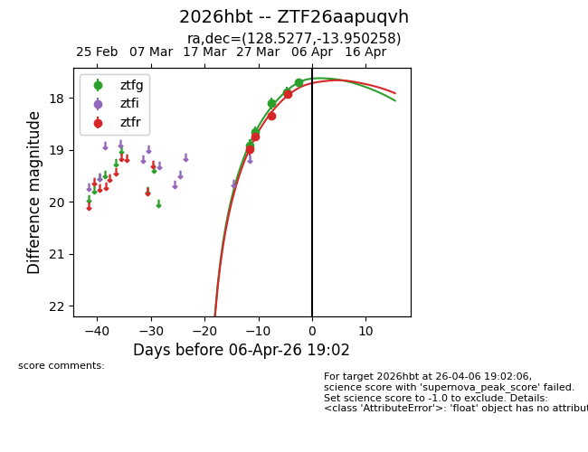
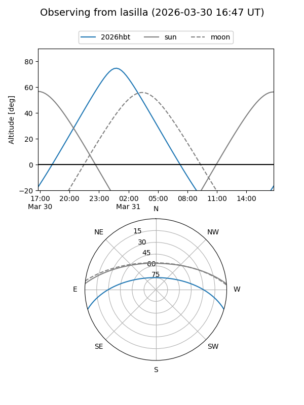
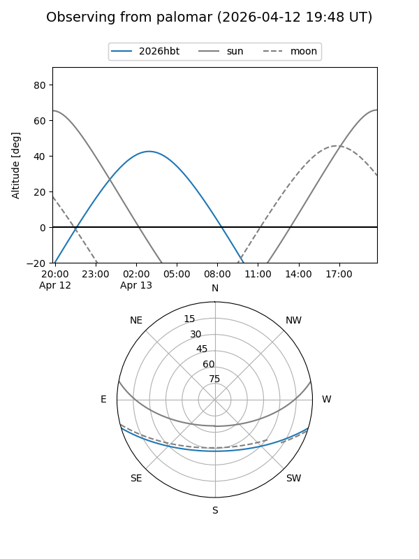
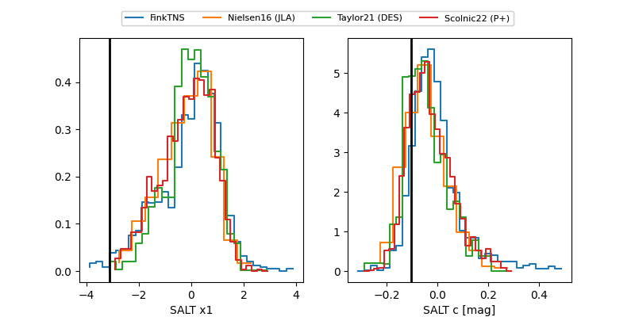

2026hbt
Target 2026hbt at 2026-04-06 19:05
Aliases and brokers:
FINK: link
Lasair: link
ALeRCE: link
TNS: link
YSE: link
alt names
ZTF26aapuqvh (ztf,fink_ztf)
2026hbt (tns,yse)
Coordinates:
equatorial (ra, dec) = 128.5277,-13.95026
equatorial (HMS+DMS) = 08:34:06.65,-13:57:00.93
galactic (l, b) = (237.8431,+15.31991)
Flags:
Photometry:
last ztfg=17.71, ztfr=17.92
5 ztfg, 4 ztfr detections
Lightcurve

Visibility


Additional plots
